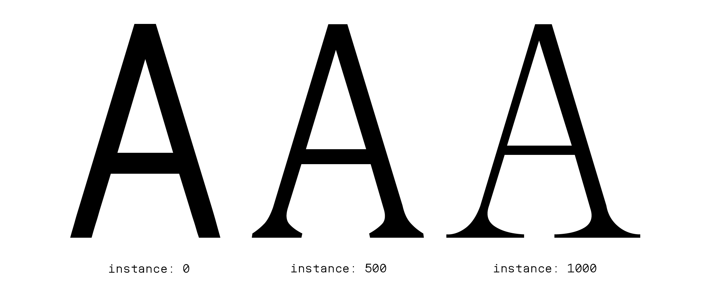

Champagne Socialist is a variable typeface which explores the possibilities of computational typography. Champagne Socialist attempts to experiment with the possibility of a single typeface for all applications, from a utilitarian monospaced sans-serif to an elegant and extravagant serif, and everything in-between. This more extreme use of the technology is purposefully used to explored the opportunities of the growing field and its truly variable application in the world of design.
The work positions itself in an ever-growing area of design with leaders such as ABC Dinamo releasing a steady flow of variable typefaces which explore variability beyond the weight and italic standards. Specifically, their recent typeface Arizona explores similar themes as my own, transitioning between a sans to sans-serif. Dennis Grauel has been another source of continuous inspiration throughout the studio. A Melbourne based designer, whose practice “aims to reflect an inquisitive mood”, Dennis’ letterforms, such as Acre and Brunswick Grotesque, remain playful while serving a functional purpose. Expressive typefaces from both Leah Maldonado and Morganne VanTorre have continued to inspire me to continue exploring the possibilities within my own typeface.